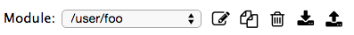
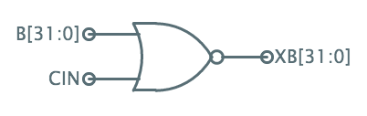
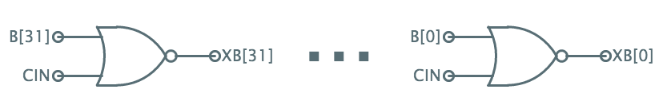

The module tools let you select an existing module to edit, create a new module (), make a copy of the current module under a new name (), delete the current module (), save all the user's modules to the module clipboard (), or select previously saved modules to load from the module clipboard to the current workspace ().
Module names look like file pathnames (/x/y/z) where the hierarchy is used to display the parts bin in organized way.
A wire can represent a multi-bit numeric constant by giving it a name of the form number'width, where number can be in decimal (e.g., 10), binary (0b1010), or hex (0xA); the width in bits is always specified in decimal. For example, "5'4" would specify a wire of width 4, where the component signals are connected to gnd, vdd, gnd, vdd.
Jade provides a framework for editing and simulating hierarchical block diagrams. The editing and simulation tools are provided by plug-ins, so it's easy extend the framework to support different types of diagrams.
The basic building block is a module. Each module has one or more aspects, which can be edited using one of the supplied editing tools. Currently Jade has editors for the following aspects:
schematic. A circuit diagram incorporating components (instances of other modules) with wires that run between the component terminals. Basic components (ground, vdd, ports, jumpers, text) are available on the toolbar; other components from the loaded module collections are available in the parts bin. The toolbar also has icons for the simulation tools (DC analysis, DC sweep, AC analysis, transient analysis and module test). It's possible to specify that the parts bin show only particular parts and the toolbar show only a subset of the tools.
icon. When a schematic contains an instance of a module as a component, what appears in the diagram is the module's icon, usually a simple shape representing the component's functionality along with terminals that allow connections to be made to the component's ports.
properties. Modules have properties (key:value pairs) that further specify the behavior of a module, e.g., the resistor module has a "resistance" property specifying the component's resistance. Properties have default values, which can be overriden for each instance of the module.
test. The test tool runs a simulation, providing a sequence of values for module's inputs and verifying that the expected values appear on the module's outputs. The test aspect provides the information needed to run the test.
To run the simulation tools on a module's schematic, Jade converts the (possibly hierarchical) schematic into a flattened netlist that has one entry for each primitive component listing its properties and the signals connected to its terminals. The netlister is given a list of primitive component modules and stops its hierachical descent when one of these components is reached.
The extraction process has several steps:
Signal names should consist of letters, numbers and _, but must start with a letter or _. For compound signals (e.g., a bus) one can specify a comma-separated list of names
You can use an iterator suffix of the form "[start:end]" or "[start:end:step]" which Jade expands into the appropriate comma-separated list. Examples:
Finally, you can use a replicator suffix of the form "#count" which will cause Jade to replicate the prefix the specified number of times. Examples:
Note that multiple suffixes are processed right-to-left.
A single component instance may generate several netlist entries. The width W of each terminal in a component is determined from its label, e.g., a terminal with a label of "foo" has W=1, a label of "sel[2:0]" has W=3. When the netlist for a component is generated, each of its terminals consumes W entries from its associated signal list. Jade will generate N components where
N = max over all terminals(length_of_terminal's_signal_list / terminal's_W)
If N*W is longer than a terminal's associated signal list, the list gets reused in a cyclic fashion. It's a bit hard to explain in words but the results tend to match your expectations. For example, the following schematic using a 2-input XOR gate

will expand into the following 32 2-input XOR gates:

Note that it is an error if (N mod W) is nonzero for any terminal.
The device-level simulation tool expects a flattened netlist containing components from the /analog collection.
When simulating digital circuits, the easiest way to run device-level transient simulations is to create a test aspect specifying
.mode device
and then use the tool to run the test. This tool will create the appropriate voltage sources to generate the specified input waveforms, run the simulation long enough to process all the test vectors, then examine the simulation results to ensure the outputs have the specified values as the specified time. The test tool will optionally plot waveforms for the specified nodes.
One can also use primitive components to generate input waveforms (using voltage and current sources) and examine output waveforms (using voltage and current probes). After including the appropriate sources and probes, the following types of circuit analysis can be performed.
DC sweep. Perform multiple DC analyses, setting the specified sources to a sequence of values over the range specified in the setup dialog. Useful for plotting voltage transfer characteristics or I/V device curves.
AC analysis. Determine the small signal response at the probed nodes with respect to source specified in the AC setup dialog. The response is calculated at different frequencies over the range specified in the setup dialog. The phase (in degrees) and magnitude (in dB) of the response is plotted as a function of log(Hz).
Transient analysis. Determine the transient response of the circuit from t=0 to the end time specified in the TRAN setup dialog. The resulting waveforms are plotted as function of time for the voltage and current probes. Note that the time to complete the simulation grows quickly with increasing circuit size -- there's a practical limit of a few tens of circuit nodes. The simulation proceeds by using a sequence of linear approximations of circuit operation over a small time step. The size of each time step is made small enough to ensure that the error introduced by the linear approximation at that step is small.
The gate-level simulation tool expects a flattened netlist containing components from the /gates collection.
When simulating digital circuits, the easiest way to run gate-level simulations is to create a test aspect specifying
.mode gate
and then use the tool to run the test. This tool will create the appropriate voltage sources to generate the specified input waveforms, run the simulation long enough to process all the test vectors, then examine the simulation results to ensure the outputs have the specified values as the specified time. The test tool will optionally plot waveforms for the specified nodes. In gate-level simulation, node values are one of the following:
The test aspect makes it easy to test the functionality of a module. Here's a test for an XOR circuit with inputs A and B, and output Z:
The tests for a module can be run by clicking in the schematic toolbar.
If you'd like to see more examples, each module in the /gates collection has a test aspect that verifies its functionality at the device level.